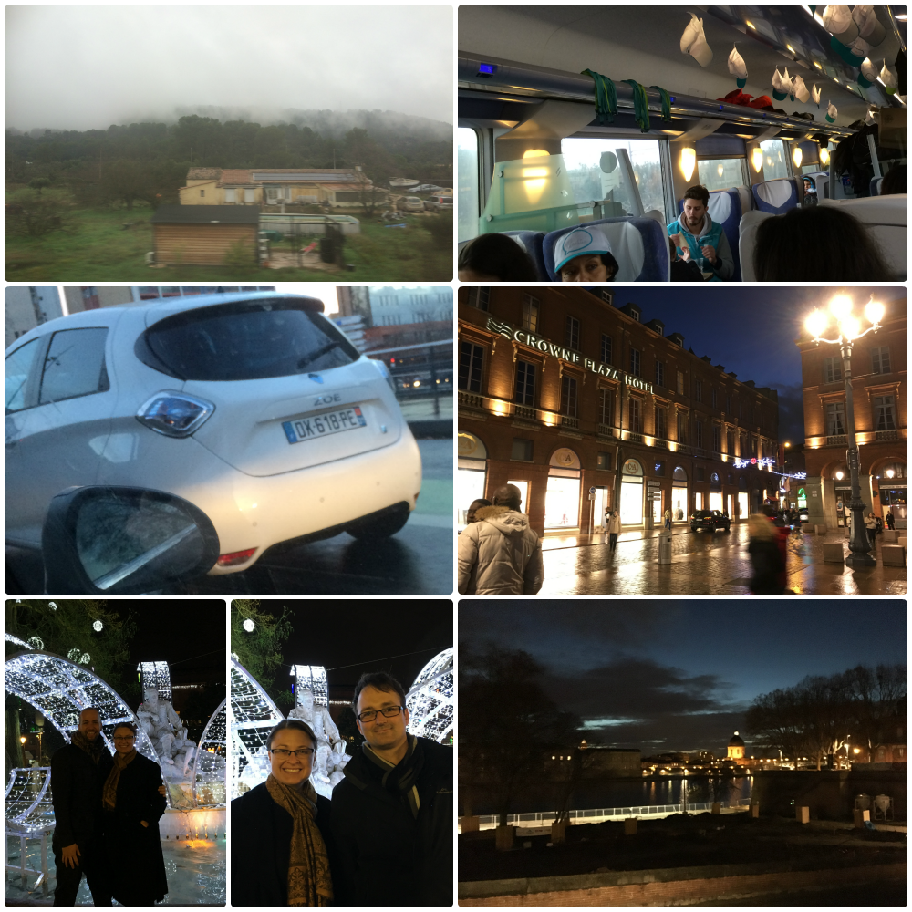
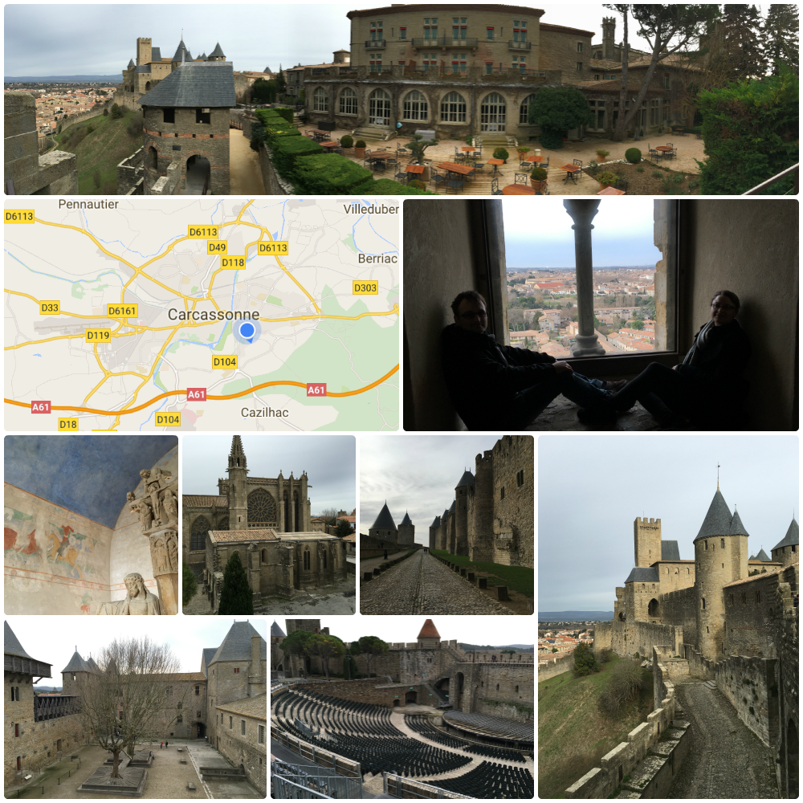
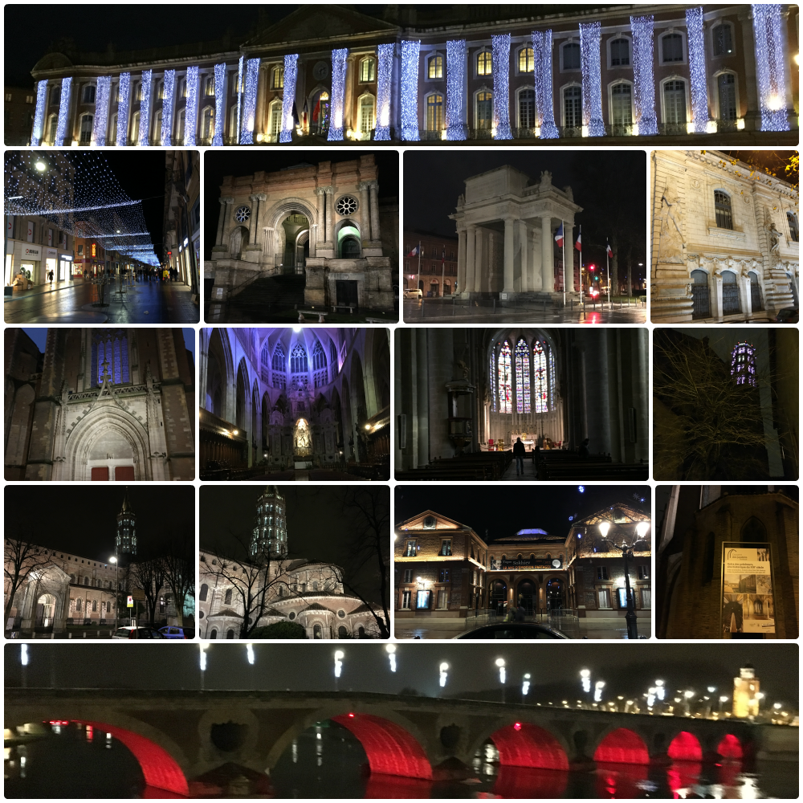
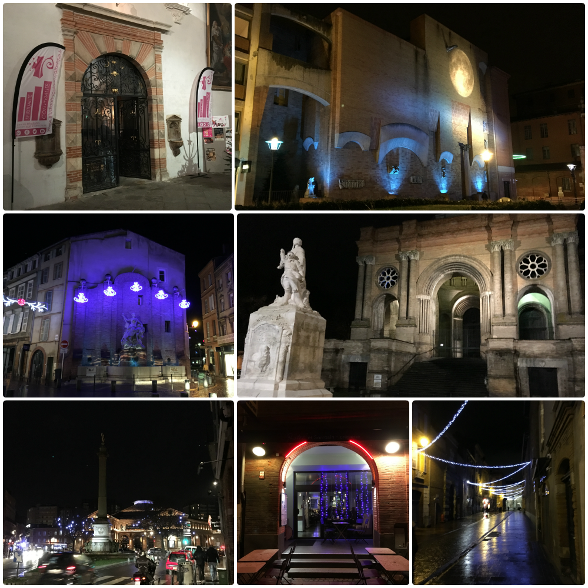

Day 26
Saturday - 02 Jan 2016
The arrival into Toulouse train station is without fanfare but on time. After muscling our bags off the train and out to the front of the train station with track down JT and Michael. A short ride into the city and we arrive at the hotel. I'm 6 parts excited and 4 parts freaked out that there is a car named a "Zoe" that passed us in the traffic. Not like someone had named their car Zoe but the model is a Zoe like a Holden Barina. NEAT!! How do I get one of those so I can one up the people that put their name on their number plates!! Mwah ah ah!
Lang and I drop our bags in the room after checking in and quickly freshen up to go out and explore with JT and Michael. JT had only just moved to Toulouse this week as he starts a new job on the Monday. Therefore the town is new and shiny for him too.
We wander around looking at Christmas decorations, the town square and the river before checking out the food options. After attempting several restaurants recommended to JT (all of which do not open until the crazy time of 2000) the decision is made to try the next restaurant that is open. This turns out to be an Italian place. DONE. The ordering process was absolutely hilarious. The waiter spoke Italian with some French and almost no English. I'm sure you can imagine the gesturing involved in THAT conversation!!
In the end I went with the carbonara as it needed no translation. It was absolutely delicious by the way. With very full tummies we make it back to the hotel and crash.
***Without noise there is no quiet***
Day 27
Sunday - 03 Jan 2016
We are down to breakfast relatively early this morning. There is no bacon but there are pickled onions and gherkins! Winning!! Sort ourselves out and make sure we are ready to go at 1000 as JT and Michael are taking us out to the Carcassonne Castle about an hour south-west of Toulouse. The complex has been restored and is now open to the public. The history of the castle is fascinating and the vistas are wonderful. There is a small community within the walls of the castle that now serves food and sells souvenirs. From one of these vendors we have a late lunch and about an hour later the rain starts to threaten so we head back to Toulouse at about 1600.
We use a tourist book with a list of must visit locations to create our own walking tour with a stop in the middle for dinner.
I ask the waitress for suggestions. I'll be honest when the waitress suggests the savory creme brulee I am very dubious. However, it is absolutely amazing. The best meal I have had the entire trip so far.
With full tummies we continue on the tour we have mapped for ourselves. With JTs new job starting the next day we call it a day at 2100.
 ***Be a trail blazer***
Day 28
Monday - 04 Jan 2016
Midday train today so an easy morning ahead. We leisurely go down for breakfast and after we have had our fill make sure we are packed and ready to go at checkout time. We stop in at reception to return the key to find out that breakfast was not included in the room. Opps. *snigger*
On to the train station via the metro. We arrive in plenty of time and find we have a comfortable 4 seater cabin with table and power points to ourselves. We at least we have it to ourselves for about 2 hours.
By 1500 we are getting hungry and the few snacks we brought with us have been depleted. I'd love a cold coke anyway so head on down to the cafe carriage I saw when we boarded the train.
There are a few people hanging out in the unmanned cabin. I assume the steward is doing food rounds and hang out talking to a Haitian man who now lives in Paris and deciphering the menu which is in French. Naturally. Over half an hour passes and the steward does not return to the cabin. On questioning my fellow passengers they have been waiting for about an hour.
At this point I'm sure my whereabouts has entered Lang's head and I excuse myself to head back to our cabin. On the journey back I run into the ticket inspector and query him about the cafe. To my disappointment there is no food service on the 6 hour trip. SHIT. Thank God for the snacks.
When we roll into the Paris train station at 1840 our 0930 breakfast seems a long long time ago.
***Snacks can save a persons life***